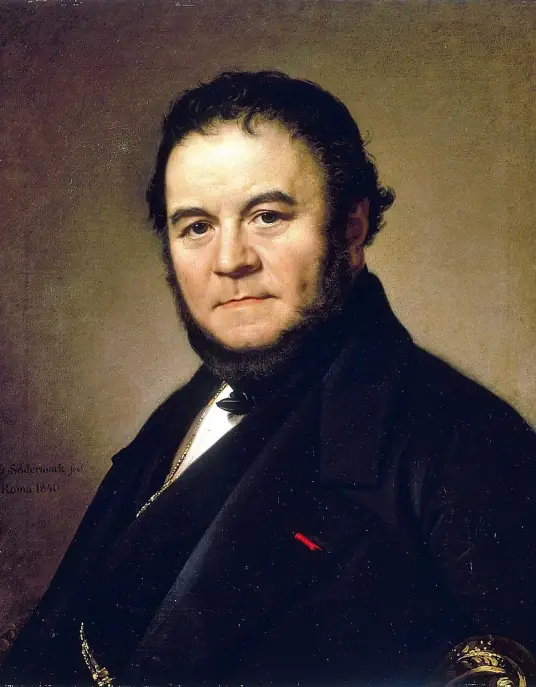

<!doctype html>
<html>
	<head>
		<meta charset="utf-8">
		<title>《紅與黑》</title>	
		<style type="text/css">
			p{color:#1d1816; font-family:隨峰體 }
			blockquote{color:#1d1816; font-family:隨峰體 }			
			header {display:block; clear:both; padding:5px ;text-align:center}
			li {font-size:1cm}
			ol {font-size:0.8cm}
			body {padding-right:1em; padding-lift:1em; padding-top:1em; padding-bottom:1em}
			img {padding-right:1em ;padding-lift:1em ;padding-top:1em ;padding-bottom:1em}
		</style>
	</head  >
	<body bgcolor="burlywood">
	<aside >
		<p style="font-size:1cm" >小說基本資訊</p>
			<nav >
				
				<ol><p>1.內容簡介</p></ol>
				<blockquote style="font-size:0.6cm">講述一位出生寒門的男子——朱利安，憑藉著英俊容顏、自身努力實</blockquote>
				<blockquote style="font-size:0.6cm">現階層越遷，卻也逐漸沉淪其中，迷失自我，最終走向毀滅的故事。</blockquote>
				<ol><p>2.作者介紹</p></ol>
				<blockquote style="font-size:0.6cm">若要談論《紅與黑》，便怎麼也繞不過這個話題——此書的作者——司湯達。他的墓碑上所寫：“活過，寫過，</blockquote>
				<blockquote style="font-size:0.6cm">愛過。”，可以說是對他一生的精妙概括。司湯達出生於一個富裕的律師之家，早年由教士負責教育，這段</blockquote>
				<blockquote style="font-size:0.6cm">經歷奠定了他對神職人員和宗教信仰的極度厭惡。另一方面，啟蒙思想的擁護者——他的外祖父，也深深地</blockquote>
				<blockquote style="font-size:0.6cm">影響了他的人生觀。隨著拿破崙的崛起，司湯達的人生迎來了高峰；然而，拿破崙的失敗也讓他的人生隨</blockquote>
				<blockquote style="font-size:0.6cm">之沒落。那段意氣風發的時光迅速逝去，隨即他開始沉寂下來，並將所有精力專注於寫作。</blockquote>
				<blockquote style="font-size:0.6cm">或許司湯達的“愛過”涵蓋了多方面的內容，但若僅論愛情而言，他無疑是一位癡情男子。比如，他為了心</blockquote>
				<blockquote style="font-size:0.6cm">愛的人，竟願意放棄軍職，成為一名雜貨店老闆。而《論愛情》更是他對人類愛情的理解與剖析的集大成之作。</blockquote>
				<blockquote style="font-size:0.6cm">甚至在他後來的作品《紅與黑》中，我們也能一窺他對愛情深刻的洞察。</blockquote>
			</nav>
	</aside>
	
	</body>
</html>